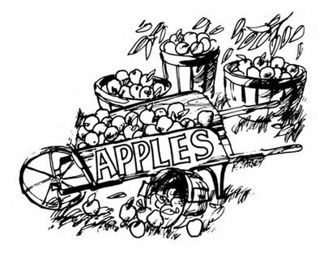

Above the 45th parallel
Clarksville, N.H.
Dear Ma:
Got to thinking of you ... lent a copy of MOTHER to a local game warden who told us about some peregrine falcons nesting up here in the spring. Maybe he'll write you, too. It's this kind of country: moose in the pasture, fox running, great horned owl scaring the night and me with it, dairy farmers, paternalistic old factories with non-caring wages in an area where prices are as high as in high-income regions. A place where we had a fight over our children's hair and they didn't go to school for two months ... and where I taught swimming this summer to the same kids (and loved them) that had taunted and tormented my kids. It's a country we're trying to hold a piece of. We must be into dream number 357 by now and still trying. If childhood is the time you feel dreams will come true, then we're still young.
Sweat equity: We got some geese to protect the one hen left from a raccoon banquet and they're a delight ... so we bought some chicks to raise in the room where most of our books are. Maybe this year our eggs won't come to $10.00 a dozen.
Our youngest son helped out a farmer, earned a Holstein heifer he watched being born ... and he's still working to pay for feeding her. She's a week old and he's nine. The other boy is clearing three acres of woodlot to get $60.00 from the Agriculture Department. Our daughter is trying to figure out ways to get a horse or two. (She can babysit kids but prefers equines.)
The old man, 40, has been working in a factory for the past few weeks ... 50 hours excluding lunch and travel time. And I'm home, hoping to substitute-teach during the sickness season (December to May). Somehow we've managed to survive, not too cleverly and not too philosophically. It's grubby, grinning survival, something I reckon we'll be doing forever. But I figure watching the sunset from our porch, through tears, is an OK thing too.
And I'm into apples, partly because there's a lesson to learn from them.
When we moved to this north country last fall we were excited to discover three apple trees in the hedgerow behind the house. Much of the fruit was small and sour, but they were there. Our very first priority in spring after most of the snow melted (in the woods up here, in June , I went waist-high through the stuff to get to marsh marigolds) was to prune the branches and to clear out everything that kept the sun from shining in. And as we watched our "orchard" over the summer we discovered that the three trees were in fact three different varieties. Then, on our treasure walks getting to know this mountain fastness of ours, we discovered six more ... too late to prune, but in plenty of time to see them blossom and fruit.
The first full bearer was the one with the small sour apples we'd tasted in the fall. There were lots of pickings, still small and still sour, but without worms or insects. Crab apples, a neighbor told me, and I felt ridiculous. That's why the fruit was unblemished: no room for the worms to pucker in. Still, it's nice to have one crab apple tree ... more than enough for us.
We went on to the rest of the orchard we'd discovered and most of it had huge fruit-red, shiny and pure- at the top . Because the trees had been crowded so much by the surrounding foliage, they'd branched ever upwards.
Gathering our three children and a wheelbarrow, with the dog's tail flagging our way down the pasture, we went to pick. "It'll take us ten minutes," I told the youngsters. We gathered all the low fruit-the little ones and the green ones-but the sight of those big red apples way above us was taunting. The bears would still have plenty to eat if we took those high growers, we thought, though why we were considering the bears' bellies I don't know ... for every apple we picked there were ten on the ground, and by the time we left the tree that ratio would treble.
The first boy to go up decided that-rather than harvest-it was better to enjoy the view or practice his pitching. With a golden retriever dog along to pursue the throws this was fun, but a loss in the apple department. The second child tumbled fruit onto ground which was protected by old tangled barbed wire and the scratchy thickness of overcrowded pines. When the third-oldest and heaviest-went up to weight down a big limb I figured my 5'10" would stretch to the sagging branch and I'd get what I could.
Over and over I kept the words coming: "Be careful. Be careful." I shook and picked. Said "Be careful" and reached higher. Said "Be careful" and got banged in the eye. It figured. Who was the one who cautioned everyone about bare feet and nails in the barn ... and then got the barn nail in the bare foot? It figured, all right ... after all, it was me that ran down the grassy bank where the geese hang out and slid for what seemed and felt like three wet green miles. So the Great Cautioner was led home by the children, blindly holding one tearing pained eye, with the other hand resting on the shoulder of the kid pushing the wheelbarrow of apples.
(I still have a black eye ... but I also have a long sapling with a toeless stocking tacked onto one end. I reach up with my stick, tap the apple, and most of the time it slides down the stocking into my hand or a catcher's mitt held by an apple-pickin' buddy. If I get hit again I'll wear my husband's old construction helmet.)
A wheelbarrow of apples doesn't look like much, particularly when it's only one-quarter of one tree ... and the old man came home that night with an enormous burlap bag full of fruit he'd picked on the way back from work. "It's a kind we don't have," he said. "For pie and freezing." (I have yet to find anyone up here who knows the names of any variety except crab apples. Around this area, apples sort of get called by what they're used for.)
So we started on the easiest way to use what we'd harvested: apple butter. The boy with the sharpest knife cut up the fruit, leaving on the peels and cores but no stems or leaves. We put 16 pounds (a mistake, eight would have been better) into a big stainless steel pot ... aluminum and iron are no good for taste. We added water and cider vinegar-cider or plain water work too, alone or in any combination-to about one-third the depth of the apples and cooked the mess until everything was mushy. Then we let the pulp cool while we got out a big bowl, a wooden spoon and a large strainer. Another mistake: everything that shouldn't be in apple butter-like core bits and seeds-was sneaking through because, with my determined effort to waste absolutely no apple mush (not after all that work and a black eye too), I was enlarging the holes in the sieve.
If you're going to make apple butter, get a ricer ... the old-timey blender machine. You'll soon master the knack of the proper angle at which to hold it over the bowl so you can avoid apple mush on the walls. (Old wooden walls come into their own during canning season. For once you appreciate their practical quality of absorbing family stains, including those from temper tantrums. The splatters don't show unless they hit spider webs and then they're removed by the resident kitchen spiders, who are far more meticulous at housekeeping than I am. But then I've yet to see a web with a family of spiders in it. I love the old beams in my kitchen even more now, although I was getting tired of defending them.)
As you push cooked apples through a ricer, you scrape the strained mush off the outside with a knife and put whatever is left inside the strainer on the compost pile or wherever. (Our dog digs the leftovers.) When all the pulp has been ground, it goes back into the pot ... but measure it first. For each cup of strained apples you'll add about a half cup of sugar, white or brown. If you use honey you'll need one-third less of the sweetening.
Mix the developing apple butter well, put it over a high flame, stir it a lot, bring it to a boil, lower the fire and add your spices. I used eight tablespoons of cinnamon and half as much allspice in my 16-pound batch. (The seasoning was ground ... if you use whole flavorings put them in a bag. An old baby sock tied with cord is fine.) If you like nutmeg add it at the very end of cooking, or the flavor will be lost. Grate and mix in the yellow rind of one lemon, then squeeze in the juice. Taste the butter after five minutes and adjust the seasonings to your liking.
Boil the mixture and stir it with a wooden paddle or spoon until a blob of the product on a plate doesn't have a ring of water around it. This will take approximately an hour ... but test about half an hour after the boiling point is reached, because a lot depends on the apples. (My first batch cooked until 2 a.m.-while I read a good book-and it's as stiff as dried prunes, but delicious.) Pour the spread into hot sterilized jars and seal them with rubbers and tops, or with paraffin. If you use wax, leave a half-inch space at the top so that you can apply a quarter inch of paraffin one-eighth inch at a time. If the wax is too hot the second time it won't make a good seal ... melt and hold your paraffin liquid in a double boiler only.
After blistering my fingers and failing into the fear trap of recipes (I forgot the lesson I tried to teach my daughter ... that cooking rules are an alphabet and not the whole language), I tightened up and almost quit on apples. But there was fruit on the porch, plenty of it
What the kids weren't nibbling every time they came through the kitchen door, the dog was snatching while I was busy chasing the geese. I conned my daughter into making a few pies to freeze, but baking apple pies sends out vibes to the world at large and the only way to save them for stashing is to assemble them in the middle of the night. . . alone.
By now one of the boys was in a contest with himself to gather apples from the highest branches of all the trees. Bloody and grinning, he added to the supply. With all that fruit on the porch and lots on the limbs, I really got into apples.
You can pickle apples, freeze them, dry them, make them into jam, jelly, applesauce or just about anything ... and they taste good mixed with other fruit. You can even make your own vinegar by placing the cores and peels, bruised parts and dropped apples gathered from the ground into a crock and covering them with water. Put a lid on the container and leave the mess to work itself into vinegar. (Keep adding fruit and water.) The foam on the top-called "mother"-is what you put into any cider you've made that you also want to turn into vinegar quickly.
Apples have a high pectin content (that's what makes jams and jellies stay together later on when you open the jar) so you don't have to buy the stuff in the stores when you make your own sweets. Just cook the fruit along with the cores and peels (where the highest pectin level is found).
Apple jelly (a good base for herb jellies like mint and chamomile and rose hip) is made the same way as apple butter except that you use water or cider for liquid, but no vinegar ... and you push the pulp through a jelly bag instead of a ricer. The lower end of an old flannel pajama leg, with the bottom well sewn together and the top (where the knee was) closed with a drawstring, does fine. Wet the bag, put the mush in and let it drip into a pot while you go and do something else. What's left in the cloth can become apple butter with the addition of water, spices, sugar and vinegar, and the juice itself is cooked with sweetening (about 60% juice and 40% sugar) until the mixture thickens.
Another good thing about apples is that they can be hold in the cellar while you go ahead with other jobs that can't wait ... like putting in doors and windows. Apples, in fact, are fine fruit in just about every way.
When an 87-year-old woman came to visit not too long ago, she mentioned our apple trees. Seventy-five years ago she used to nibble their fruit, and when she was married-in the room we call the kitchen-there was apple pie from those same branches. The trees were here before she was born ... they should be here after I die. There are abandoned orchards left all over this region and they're still beautiful. Next year they'll bloom again after bearing another winter's snows and I'll learn even more ... and, yesterday-in the incredible abundance of this land-I discovered seven red plum trees!
To all of you, all over, a happy harvest. Peace, dear friends.
Sini Foskett
|
 |
|
|